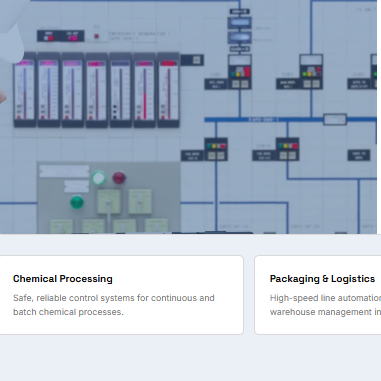
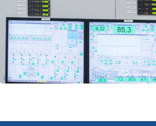

From oil & gas facilities to power generation plants, we engineer automation solutions built around the specific demands of your industry.
Oil and gas facilities operate in demanding environments where control system reliability is non-negotiable. We design and commission automation solutions for upstream, midstream, and downstream applications — with a focus on safety, uptime, and regulatory compliance.
SCADA-based pipeline supervision with flow measurement, leak detection, and remote valve actuation across distributed assets.
SIL-rated safety logic design and implementation for emergency shutdown, fire and gas detection, and process protection.
PLC control of wellhead equipment, separators, and metering skids — with remote monitoring and historian integration.
Automated start/stop sequencing, surge protection, and condition monitoring for rotating equipment across the facility.

Power & EnergyPower generation and distribution assets require automation that is robust, redundant, and built to utility-grade standards. We deliver SCADA and control solutions for thermal, hydro, and substation applications — engineered for continuous operation.
Control and protection systems for steam and gas turbines, generator sequencing, and grid synchronization.
IEC 61850-compliant substation automation, bay control, and protection relay communication architectures.
Precision fuel-air ratio control, feedwater drum level regulation, and multi-tier interlocks for boiler safety.
Hot-standby redundant PLC CPU configurations guaranteeing seamless bump-less switchover during failover.

Water & WastewaterWater utilities and industrial treatment plants rely on automation to maintain consistent quality, manage energy consumption, and meet environmental discharge standards. We deliver SCADA and PLC solutions for treatment, pumping, and distribution applications.
Automated dosing, filtration, and disinfection control with real-time quality monitoring and regulatory data logging.
Remote monitoring and control of booster and lift stations — with duty/standby sequencing, level control, and telemetry.
Network-wide SCADA visibility across reservoirs, pressure zones, and distribution assets with alarm management.
Pump scheduling and variable speed drive integration to reduce energy consumption across the distribution network.